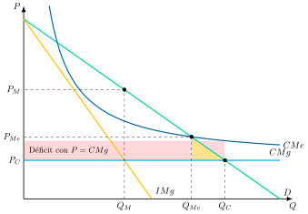
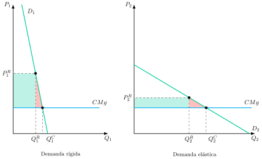
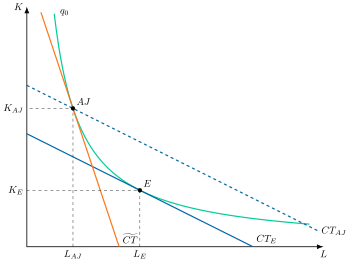

Apuntes para la oposición al Cuerpo de Diplomados Comerciales del Estado
18 Poder de mercado y regulación óptima: instrumentos, efectos y limitaciones. Desarrollos en presencia de información asimétrica. Aplicaciones prácticas.
18.1 Introducción  1'
1'
En octubre de 2014 la Real Academia Sueca de Ciencias concedió el Premio de Ciencias Económicas en memoria de Alfred Nobel a Jean Tirole “por su análisis del poder de mercado y su regulación” (The Royal Swedish Academy of Sciences 2014). El premio reconocía una línea de trabajo que responde a una pregunta clásica: qué debe hacer el sector público cuando en un mercado hay una sola empresa, o muy pocas, capaces de fijar precios por encima de su coste.
Los teoremas fundamentales de la economía del bienestar garantizan que un mercado competitivo asigna los recursos de forma eficiente, pero solo si se cumplen sus supuestos. Cuando una empresa tiene poder de mercado, la asignación deja de ser eficiente y la intervención pública puede estar justificada. El caso extremo es el monopolio natural, propio de actividades como el transporte y la distribución de electricidad, gas o agua, en las que resulta más barato que una sola empresa abastezca todo el mercado. En ellas la competencia no solo no es posible, sino que tampoco sería deseable, y la defensa de la competencia deja paso a la regulación. Surgen así varias cuestiones:
¿Qué instrumentos tiene el regulador para acercar el resultado al óptimo social y qué efectos y limitaciones tiene cada uno?
¿Cómo cambia el problema cuando la empresa regulada sabe más que el regulador sobre sus costes y su esfuerzo?
¿Qué puede hacer el regulador cuando hay varias empresas, ya sea para compararlas entre sí, para hacerlas competir por el mercado o para ordenar su acceso a la red?
¿Cómo se aplican estos principios en la regulación real de las redes energéticas, las telecomunicaciones o las plataformas digitales?
Por consiguiente, el objetivo del presente tema es responder a las cuestiones anteriores, para lo que estudiaremos:
El poder de mercado y los instrumentos de la regulación con información completa, con sus efectos y limitaciones.
Los desarrollos de la nueva economía de la regulación en presencia de información asimétrica, incluida la regulación por incentivos.
La regulación óptima cuando hay varias empresas: competencia por comparación, competencia por el mercado, acceso a las redes y plataformas.
Las aplicaciones prácticas en España, la Unión Europea y el Reino Unido.
18.2 Poder de mercado y regulación con información completa: instrumentos, efectos y limitaciones 6'
Comenzando por los fundamentos, antes de comparar instrumentos conviene precisar en qué mercado se mide el poder de mercado, qué es, por qué preocupa y en qué casos la respuesta adecuada es regular y no solo defender la competencia.
Poder de mercado y justificación de la regulación
Mercado relevante
El mercado relevante es el conjunto de productos y de zonas geográficas que compiten entre sí lo bastante como para disciplinar los precios de una empresa.1 Para delimitarlo se usa el test del monopolista hipotético, o SSNIP (por las siglas en inglés de una subida pequeña pero significativa y no transitoria del precio), que introdujeron las directrices de concentraciones de Estados Unidos (U.S. Department of Justice 1982). Se pregunta si a un monopolista hipotético de un conjunto candidato de productos le resultaría rentable una subida del orden del 5 al 10 %. Si no le resulta rentable, porque los clientes se pasarían a otros productos, estos se añaden al conjunto y se repite el test.2 El mercado relevante es el marco en el que se miden las cuotas y el poder de mercado, y el primer paso de la regulación ex ante de sectores como las telecomunicaciones.
Poder de mercado
El poder de mercado es la capacidad de una empresa para fijar de forma rentable y duradera un precio superior a su coste marginal.3 Su medida habitual es el índice que propuso Lerner (1934), \(IL\), que relaciona el margen entre el precio, \(P\), y el coste marginal, \(CMg\), con el propio precio. En el óptimo de un monopolista ese margen es igual a la inversa del valor absoluto de la elasticidad-precio de la demanda, \(\left|\varepsilon\right|\): \[IL=\dfrac{P-CMg}{P}=\dfrac{1}{\left|\varepsilon\right|}\] El índice vale cero en competencia perfecta y es mayor cuanto más rígida es la demanda que afronta la empresa.
El poder de mercado genera tres tipos de ineficiencia, que sirven después para valorar cada instrumento de regulación:
Ineficiencia asignativa: al fijar un precio superior al coste marginal se produce menos de lo socialmente óptimo y aparece una pérdida irrecuperable de bienestar, el triángulo de Harberger (1954).
Ineficiencia productiva: sin la presión de los competidores, la empresa no tiene incentivos para producir al mínimo coste, lo que Leibenstein (1966) denominó ineficiencia X.
Ineficiencia dinámica: el poder de mercado persistente puede frenar la innovación y la inversión, aunque la evidencia empírica sobre este efecto no es concluyente.
La respuesta pública depende del origen del poder de mercado (Braeutigam 1989). Si procede de conductas estratégicas de las empresas o de barreras legales, la competencia sigue siendo posible y el instrumento adecuado es la defensa de la competencia, que actúa ex post sancionando conductas y controlando concentraciones. Si procede de la propia estructura de costes de la actividad, la competencia deja de ser deseable y la respuesta es la regulación económica, que actúa ex ante sobre los precios, la entrada y la calidad.
Monopolio natural
Un monopolio natural es un mercado en el que la función de costes es subaditiva, es decir, en el que producir toda la cantidad demandada con una sola empresa cuesta menos que repartirla entre varias.4 Formalmente, si \(C\left(Q\right)\) es el coste de producir la cantidad total, \(Q\), y \(q_{i}\) la producción de cada una de las \(n\) empresas entre las que podría repartirse: \[C\left(Q\right)<\sum\limits_{i=1}^{n}C\left(q_{i}\right),\qquad Q=\sum\limits_{i=1}^{n}q_{i}\] Con un solo producto, las economías de escala son condición suficiente, pero no necesaria, para la subaditividad (Baumol 1977; Baumol et al. 1982).5
No obstante, el monopolio natural plantea un dilema: mantener una sola empresa preserva la eficiencia productiva, pero dejarla sin regular sacrifica la eficiencia asignativa. Además, puede no ser sostenible, porque a un entrante puede resultarle rentable servir solo una parte de la demanda aunque con ello se pierda la ventaja de costes. Por eso la regulación debe ocuparse también de las condiciones de entrada, ya sea prohibiéndola o subastando el derecho de exclusiva. Resolver ese dilema de la mejor manera posible es, precisamente, el objeto de la regulación óptima.
Regulación óptima
La regulación óptima es la elección de las reglas de precios, entrada y calidad que maximizan el bienestar social, medido como la suma del excedente de los consumidores y el beneficio de la empresa, sujeta a que la empresa regulada sea viable y a lo que el regulador puede observar.6 Para ello dispone de varios instrumentos: la fijación de precios, el control de la entrada, la exigencia de calidad y, como alternativa a regular una empresa privada, la propiedad pública de la empresa. Cada instrumento se valora por sus efectos sobre las tres eficiencias y por sus limitaciones, que proceden de la información, del compromiso del regulador y del riesgo de captura.
A continuación, el análisis comenzará por el caso más favorable al regulador, aquel en que conoce todo sobre la empresa, e introducirá después las limitaciones de información y de compromiso que aparecen en la práctica.
Tarificación con información completa
La teoría tradicional supone que el regulador conoce los costes y la demanda de la empresa, y que esta produce al mínimo coste. La pregunta es entonces qué precio fijar.
Precio igual al coste marginal
La primera respuesta, que se remonta a Dupuit (1844) y que formalizó Hotelling (1938), es la regla de eficiencia de la competencia perfecta, \(P=CMg\). Con ella se alcanza el óptimo de primer orden, porque cada unidad se produce mientras el valor que le dan los consumidores supera su coste. El problema aparece en el monopolio natural típico, en el que la producción eficiente se sitúa en el tramo decreciente del coste medio, \(CMe\). Allí el coste marginal es menor que el coste medio y la empresa incurre en pérdidas, como muestra la Figura 18.1. Si, en cambio, la producción eficiente se situara en el tramo creciente del coste medio, el precio igual al coste marginal no causaría pérdidas, pero el monopolio podría no ser sostenible y la regulación tendría que limitar la entrada.
Hotelling proponía cubrir ese déficit con impuestos de suma fija, pero la propuesta tiene tres limitaciones.
Los impuestos realmente disponibles distorsionan otros mercados, así que cada euro de subvención cuesta a la sociedad más de un euro.
Hacer pagar a los contribuyentes un servicio que no usan es discutible en términos de equidad.
Por último, una empresa que sabe que sus pérdidas serán cubiertas pierde el incentivo a controlar sus costes.
Además, Coase (1946) añadió una crítica de fondo: si el precio no cubre el coste total, el regulador nunca sabe si los usuarios valoran el servicio lo suficiente como para justificar su existencia.
Precio igual al coste medio
La alternativa más simple es exigir que el precio cubra exactamente el coste medio, \(P=CMe\), de modo que la empresa no tenga pérdidas ni beneficios extraordinarios. Es un óptimo de segundo orden: la producción queda por debajo de la eficiente y reaparece una pérdida de eficiencia asignativa, aunque menor que la del monopolio sin regular. Su limitación principal es de incentivos, porque si el precio se revisa para cubrir cualquier coste, la empresa no gana nada reduciéndolo.
Gráficamente, en un plano de precio, \(P\), y cantidad, \(Q\), como el de la Figura 18.1, se representan la demanda, \(D\), el ingreso marginal, \(IMg\), el coste medio decreciente, \(CMe\), y el coste marginal constante, \(CMg\). Así:
Sin regular, el monopolio produce la cantidad \(Q_{M}\), en la que el ingreso marginal iguala al coste marginal, y cobra el precio \(P_{M}\).
Con la regla del coste medio, produce \(Q_{Me}\) al precio \(P_{Me}\), con una pérdida de eficiencia pequeña (el triángulo sombreado).
Con la regla del coste marginal, produce la cantidad eficiente, \(Q_{C}\), al precio \(P_{C}\), con un déficit igual al rectángulo sombreado, que coincide con el coste fijo porque el coste marginal es constante.

Tarifas no lineales
Una tercera vía renuncia a cobrar un precio único por unidad. En la tarifa en dos partes (Coase 1946; Oi 1971), cada usuario paga una cuota fija, \(A\), que reparte el coste fijo de la empresa, \(CF\), entre sus \(n\) usuarios, y un precio por unidad, \(p\), igual al coste marginal. La factura, \(T\), de un usuario que consume \(q\) unidades es entonces: \[T=A+p\cdot q,\qquad A=\dfrac{CF}{n},\qquad p=CMg\] En el margen el precio es eficiente y la cuota cubre el déficit, como lo haría un impuesto de suma fija pagado solo por los usuarios.
Su limitación es la exclusión, porque los usuarios cuyo excedente es menor que la cuota abandonan el mercado. Por eso suele ofrecerse un menú de tarifas, en el que cada usuario elige entre pagar solo un precio por unidad superior al coste marginal o pagar la cuota fija con un precio igual al coste marginal. Nadie empeora respecto al precio único y los grandes consumidores mejoran, por lo que el menú supone una mejora paretiana (Braeutigam 1989).7 La factura eléctrica española, con un término de potencia y un término de energía, responde a esta lógica.
Por otro lado, cuando una misma capacidad atiende demandas que varían a lo largo del día o del año, como ocurre con la electricidad, la tarificación según la carga formalizada por Steiner (1957) carga el coste de la capacidad sobre los usuarios de las horas punta, que son quienes obligan a instalarla, y cobra en las horas valle solo el coste de operación.8
Precios de Ramsey-Boiteux
Cuando la empresa produce varios bienes y no puede discriminar entre usuarios, la cuestión es cómo repartir el coste fijo entre los precios. La respuesta de Boiteux (1956), análoga a la que Ramsey (1927) había dado para la imposición óptima, consiste en maximizar el bienestar sujeto a que la empresa no tenga pérdidas.
Baumol y Bradford (1970) difundieron después el resultado y mostraron la equivalencia entre ambos problemas: si las demandas de los bienes son independientes, el margen del precio de cada bien, \(P_{i}\), sobre su coste marginal, \(CMg_{i}\), debe ser inversamente proporcional al valor absoluto de la elasticidad-precio de su demanda, \(\left|\varepsilon_{i}\right|\), en una proporción que depende del multiplicador de la restricción de beneficio, \(\lambda\), que mide cuánto bienestar se pierde por exigir que la empresa cubra sus costes: \[\dfrac{P_{i}-CMg_{i}}{P_{i}}=\dfrac{\lambda}{1+\lambda}\cdot\dfrac{1}{\left|\varepsilon_{i}\right|} \tag{18.1}\] El cociente \(\lambda/\left(1+\lambda\right)\) es el número de Ramsey, comprendido entre cero y uno.9 Que la restricción obligue significa que, sin ella, el regulador fijaría precios distintos. Cuanto mayor es el coste fijo que hay que cubrir, más tiene que alejarse de los precios eficientes y más bienestar cuesta cada euro de beneficio que exige a la empresa, que es lo que mide \(\lambda\):
Si la restricción apenas obliga, \(\lambda\) tiende a cero y el precio tiende al coste marginal.
Si obliga mucho, el número de Ramsey tiende a uno y los precios se acercan a los de monopolio.10
Así, esta es la regla de la elasticidad inversa aplicada a los precios públicos, que carga más margen sobre los bienes de demanda más rígida.11
Gráficamente, en dos planos de precio, \(P_{i}\), y cantidad, \(Q_{i}\), como los de la Figura 18.2, se representan un mercado de demanda rígida, \(D_{1}\), y otro de demanda elástica, \(D_{2}\), con el mismo coste marginal constante, \(CMg\). Así:
En el mercado 1, el precio de Ramsey, \(P^{R}_{1}\), queda muy por encima del coste marginal.
En el mercado 2, el margen es menor.
En ambos, las cantidades de Ramsey, \(Q^{R}_{1}\) y \(Q^{R}_{2}\), se reducen en la misma proporción respecto a las eficientes, \(Q^{C}_{1}\) y \(Q^{C}_{2}\), pero en el mercado de demanda rígida eso exige un margen mucho mayor.
Los rectángulos son los ingresos que cubren el coste fijo y los triángulos, las pérdidas de eficiencia.
Sin embargo, los precios de Ramsey-Boiteux tienen tres limitaciones.
Son regresivos, porque los bienes de demanda rígida suelen ser de primera necesidad y pesan más en el gasto de los hogares de menor renta.
Exigen conocer elasticidades y costes que, en la práctica, solo conoce bien la propia empresa.
Por último, solo son óptimos si no hay otras distorsiones en la economía, pues en caso contrario la teoría del segundo óptimo (Lipsey y Lancaster 1956) obliga a tenerlas en cuenta.

Regulación de la tasa de rendimiento y teoría positiva
En la práctica, ningún regulador conoce costes y elasticidades con la precisión que exigen las reglas anteriores. Durante buena parte del siglo XX, sobre todo en Estados Unidos, se optó por un mecanismo mucho más sencillo: limitar la rentabilidad de la empresa.
Regulación de la tasa de rendimiento
La regulación de la tasa de rendimiento, o por coste del servicio, es la que fija precios que permiten a la empresa recuperar sus costes de operación y obtener sobre el capital invertido, \(K\), una tasa de rendimiento máxima, \(s\), superior al coste de oportunidad del capital, \(r\), pero inferior a la que obtendría sin regular. Si los ingresos totales, \(IT\left(K,L\right)\), dependen del capital y del trabajo, \(L\), cuyo precio es el salario, \(w\), la restricción puede escribirse también en términos del beneficio económico, \(\pi=IT\left(K,L\right)-w\cdot L-r\cdot K\): \[\dfrac{IT\left(K,L\right)-w\cdot L}{K}\leq s\quad\Longleftrightarrow\quad\pi\leq\left(s-r\right)\cdot K\] Averch y Johnson (1962) demostraron que, como cada unidad adicional de capital eleva en \(s-r\) el beneficio máximo permitido, la empresa elige una combinación de factores con más capital del que minimiza los costes. Es el efecto Averch-Johnson o sobrecapitalización.12
Gráficamente, en un plano de capital, \(K\), y trabajo, \(L\), como el de la Figura 18.3, se representan la isocuanta \(q_{0}\) y tres isocostes. Así:
La combinación que minimiza los costes de producir \(q_{0}\) es \(E\), donde la isocuanta es tangente al isocoste \(CT_{E}\), cuya pendiente es el cociente entre el salario y el coste del capital.
La empresa regulada se comporta como si el capital fuera más barato y elige la combinación \(AJ\), tangente a un isocoste más inclinado, \(\widetilde{CT}\), con más capital y menos trabajo.
A los precios reales de los factores, esa combinación cuesta \(CT_{AJ}\), más que \(CT_{E}\).13
Su ventaja es informativa, porque solo exige observar beneficios contables y capital, comprobables mediante auditoría, y da a la empresa seguridad para recuperar inversiones hundidas.14
Sus limitaciones son la ineficiencia productiva, la ausencia de incentivos a reducir costes, porque cualquier coste se traslada al precio, y una estructura de precios que no sigue la lógica de Ramsey-Boiteux. Tampoco incentiva la innovación, porque cualquier ahorro de costes se traslada al precio en la siguiente revisión. Además, el regulador debe fijar \(s\) sin conocer la tecnología de la empresa.

Teoría positiva de la regulación
Los instrumentos anteriores suponen un regulador benevolente, y la Escuela de Chicago puso en duda ese supuesto. Stigler (1971) sostuvo que la regulación es un bien que se intercambia en un mercado político y que, por regla general, la adquiere la propia industria y se diseña en su beneficio, porque los productores son pocos, están bien organizados y tienen mucho en juego, mientras que los consumidores están dispersos. Es la teoría de la captura del regulador.15
Peltzman (1976) generalizó el argumento: el regulador maximiza su apoyo político y reparte las rentas entre productores y consumidores, con lo que el precio regulado queda entre el competitivo y el de monopolio. Becker (1983) lo modelizó como una competencia entre grupos de presión en la que los costes de eficiencia de la regulación limitan su propio alcance, porque cuanto mayor es la pérdida irrecuperable, más se resiste el grupo perjudicado. La implicación de política es que la limitación de la regulación no es solo informativa sino también institucional, y justifica reguladores independientes, reglas transparentes y la evaluación de resultados.
18.3 Desarrollos en presencia de información asimétrica 5'30"
Los instrumentos anteriores tropiezan con una misma dificultad: la empresa regulada conoce mejor que el regulador sus costes y el esfuerzo que dedica a reducirlos. Desde finales de los años setenta, la nueva economía de la regulación trató este problema como una relación entre un principal, el regulador, y un agente, la empresa, y se preguntó cuál es la mejor regulación posible dada esa asimetría de información (Laffont y Tirole 1993; Armstrong y Sappington 2007).
Información asimétrica en la regulación
Hay información asimétrica en la regulación cuando la empresa regulada conoce variables relevantes que el regulador no puede observar. El problema adopta dos formas:
Selección adversa cuando la empresa conoce su tecnología, por ejemplo si es de coste alto o bajo, y puede declarar costes superiores a los reales.
Riesgo moral cuando el regulador no observa el esfuerzo de los gestores por reducir costes, y entonces un coste alto puede deberse a una mala tecnología o a la falta de esfuerzo.
En los dos casos, el regulador solo consigue que la empresa revele lo que sabe o se esfuerce si le deja una parte del excedente, que es la renta informativa.
Renta informativa
La renta informativa es el beneficio extraordinario que el regulador debe dejar a la empresa eficiente para que no le compense hacerse pasar por ineficiente.16 Toda la teoría gira en torno a un mismo conflicto: reducir esa renta exige distorsionar la producción o el esfuerzo de la empresa, y mejorar la eficiencia exige dejarle más renta.
Selección adversa: de Loeb y Magat a Baron y Myerson
Loeb y Magat (1979) fueron los primeros en plantear la regulación como un problema de información:
Proponían dejar que la empresa fijara libremente su precio y pagarle una subvención igual al excedente de los consumidores.17
Al apropiarse de todo el excedente, la empresa elige por sí misma un precio igual al coste marginal, cualquiera que sea su coste y sin necesidad de revelarlo.
El mecanismo es eficiente, pero transfiere a la empresa todo el excedente y exige conocer la demanda, por lo que solo es aceptable si los fondos públicos no tienen coste social y no importa redistribuir renta hacia la empresa (Laffont y Martimort 2002, 18).
Por su parte, Baron y Myerson (1982) convirtieron el problema en uno de segundo óptimo al suponer que el regulador valora menos el beneficio de la empresa que el excedente de los consumidores, de modo que dejarle rentas tiene un coste.
En la versión más sencilla, la empresa produce una cantidad, \(q\), que los consumidores valoran en \(S\left(q\right)\), con un coste marginal que solo ella conoce y que puede ser bajo, \(\underline{\theta}\), con probabilidad \(\nu\), o alto, \(\overline{\theta}\), con probabilidad \(1-\nu\).
Llamando \(\Delta\theta=\overline{\theta}-\underline{\theta}\) a la diferencia de costes, el regulador ofrece un menú de contratos, uno para cada tipo, con una cantidad y una transferencia, \((\underline{q},\underline{t})\) y \(\left(\overline{q},\overline{t}\right)\). La renta de cada tipo es lo que cobra menos lo que le cuesta producir, \(\underline{U}=\underline{t}-\underline{\theta}\cdot\underline{q}\) y \(\overline{U}=\overline{t}-\overline{\theta}\cdot\overline{q}\). El regulador elige el menú que maximiza el bienestar esperado sujeto a dos restricciones:
Compatibilidad de incentivos: cada tipo prefiere el contrato pensado para él. Para la empresa de coste bajo, \(\underline{U}\geq\overline{U}+\Delta\theta\cdot\overline{q}\), porque si eligiera el contrato de la de coste alto cobraría su transferencia y produciría \(\overline{q}\) con un coste menor.
Participación: cada tipo acepta su contrato, \(\underline{U}\geq0\) y \(\overline{U}\geq0\).
Si, para simplificar, el regulador no da ningún peso al beneficio de la empresa, en el óptimo solo son activas la compatibilidad de la empresa de coste bajo y la participación de la de coste alto, de modo que la de coste alto no obtiene renta y la de coste bajo obtiene una renta informativa igual a lo que ganaría produciendo con su coste más bajo la cantidad pensada para la de coste alto (Laffont y Martimort 2002, 41-43): \[\overline{U}=0,\qquad\underline{U}=\Delta\theta\cdot\overline{q}\] Sustituyendo estas rentas, el regulador elige las dos cantidades para maximizar el excedente esperado menos la renta que deja a la empresa de coste bajo: \[\max_{\underline{q},\overline{q}}\;\nu\cdot\left[S(\underline{q})-\underline{\theta}\cdot\underline{q}\right]+\left(1-\nu\right)\cdot\left[S\left(\overline{q}\right)-\overline{\theta}\cdot\overline{q}\right]-\nu\cdot\Delta\theta\cdot\overline{q}\] Como esa renta crece con la cantidad que se pide a la empresa de coste alto, el regulador la reduce por debajo de la eficiente. La empresa de coste bajo produce la cantidad de información completa, \(S^{\prime}(\underline{q})=\underline{\theta}\), lo que se conoce como ausencia de distorsión en el extremo superior, y la de coste alto produce hasta que el valor marginal para los consumidores, \(S^{\prime}\left(\overline{q}\right)\), iguala su coste marginal más un recargo informativo: \[S^{\prime}\left(\overline{q}\right)=\overline{\theta}+\dfrac{\nu}{1-\nu}\cdot\Delta\theta \tag{18.2}\] El recargo es mayor cuanto más probable es que la empresa sea eficiente y cuanto mayor es la diferencia de costes. De ahí que, con información asimétrica, la regulación óptima sea un menú de contratos que acepta cierta ineficiencia asignativa para extraer rentas, con un precio de la empresa menos eficiente superior a su coste marginal.18
Selección adversa y riesgo moral: Laffont y Tirole
Laffont y Tirole (1986) añadieron el riesgo moral y una justificación distinta del coste de las rentas: cada euro transferido a la empresa se financia con impuestos distorsionantes y cuesta a la sociedad \(1+\lambda\) euros, donde \(\lambda\) es el coste sombra de los fondos públicos. El coste observado de prestar el servicio, \(C\), depende de un parámetro de eficiencia que solo conoce la empresa, \(\beta\), y del esfuerzo de sus gestores, \(e\), que el regulador no observa y que les supone una desutilidad creciente y convexa, \(\psi\left(e\right)\): \[C=\beta-e\] El regulador observa el coste, pero no puede separar qué parte se debe a la tecnología y cuál al esfuerzo: un coste bajo puede proceder de una empresa eficiente o de una ineficiente que se esfuerza mucho.
La solución es un menú de contratos lineales. La empresa anuncia un coste previsto, \(C^{a}\), y recibe un pago total, \(TR\), formado por un pago fijo, \(a\), y una fracción, \(b\), de la desviación entre el coste real y el anunciado, ambos dependientes del anuncio: \[TR=a\left(C^{a}\right)+b\left(C^{a}\right)\cdot\left(C-C^{a}\right)\]
De esta forma:
Con \(b=0\), contrato de precio fijo, la empresa asume todo el sobrecoste y se queda con todo el ahorro, lo que da el máximo incentivo al esfuerzo.
Con \(b=1\), contrato de reembolso de costes o cost plus, el regulador cubre cualquier desviación y la empresa no tiene incentivo alguno a reducir costes.
En el óptimo, la empresa eficiente elige un contrato próximo al de precio fijo, ejerce el esfuerzo eficiente y obtiene una renta informativa. La ineficiente elige un contrato con mayor reembolso de costes, no obtiene renta y se le induce un esfuerzo inferior al eficiente, porque exigirle más esfuerzo aumentaría la renta que hay que dejar a la eficiente (Laffont y Tirole 1993).
Laffont y Tirole mostraron además que, bajo ciertas condiciones de separabilidad de los costes, la fijación de precios y los incentivos pueden tratarse por separado: los precios siguen una regla de tipo Ramsey-Boiteux, en la que el coste de los fondos públicos hace de multiplicador, y la extracción de rentas se resuelve con el menú de transferencias. Los esquemas reales se interpretan con este menú: el price cap es un contrato de alto poder, próximo al de precio fijo, y la regulación por coste del servicio es uno de bajo poder, próximo al cost plus.19
Implicaciones: regulación por incentivos
Estos resultados dan fundamento teórico al paso, desde los años ochenta, de la regulación por coste del servicio a mecanismos que desvinculan el precio de los costes declarados por la empresa, un paso impulsado también por la sobrecapitalización y por las privatizaciones británicas.
Precio máximo o price cap
El price cap es una regulación que fija una senda de precios máximos para una cesta de servicios que crece con la inflación menos un factor de eficiencia, \(X\), durante un periodo regulatorio de varios años. Lo propuso Littlechild (1983) para British Telecom. Si \(P_{t}\) es el precio máximo en el año \(t\) e \(IPC\) la tasa de inflación: \[P_{t}=P_{t-1}\cdot\left(1+IPC-X\right)\] Como el precio no depende de los costes que la empresa logre, cada euro que ahorra durante el periodo es un euro de beneficio. El price cap incentiva así la eficiencia productiva y traslada las ganancias al consumidor a través de \(X\) y de las revisiones periódicas, en las que el precio vuelve a alinearse con los costes.
Cuanto más largo es el periodo, mayor es el incentivo, pero más tarda el consumidor en beneficiarse. Cuando el tope se aplica a la media ponderada de una cesta, la empresa elige los precios relativos y, si las ponderaciones son las cantidades, tiende a una estructura próxima a la de Ramsey-Boiteux que el regulador no necesita calcular (Armstrong y Sappington 2007, 1609-12).
Sus limitaciones son la dificultad de fijar el precio inicial y \(X\) sin información sobre los costes, la tentación de empeorar la calidad para ahorrar costes, que obliga a regularla por separado, y el efecto trinquete: si la empresa anticipa que sus ahorros se trasladarán a un \(X\) más exigente en la siguiente revisión, reduce su esfuerzo al acercarse el final del periodo. Además, la empresa puede ahorrar aplazando inversiones de larga vida y, si obtiene beneficios elevados, el regulador puede verse presionado a revisar la senda antes de tiempo, lo que resta credibilidad al esquema.20
Esquemas intermedios
Entre el coste del servicio, que no da incentivos pero tampoco deja rentas, y el price cap, que da incentivos máximos pero puede dejar rentas elevadas, existen esquemas intermedios. En el reparto de beneficios o escala móvil, la empresa retiene solo una parte de los beneficios que superan una banda de rentabilidad y comparte el resto con los consumidores.
Compromiso y captura
El modelo básico supone que el regulador se compromete a respetar el contrato y que es benevolente. Relajar estos supuestos explica buena parte de los problemas que se observan en la práctica.
Compromiso y efecto trinquete
El efecto trinquete es la tendencia de una empresa regulada a ocultar su eficiencia o reducir su esfuerzo cuando anticipa que sus buenos resultados endurecerán el contrato siguiente. Si el contrato se revisa periódicamente, la empresa que revela costes bajos hoy recibirá mañana un contrato más exigente.
Anticipándolo, la empresa eficiente oculta su eficiencia o modera su esfuerzo, y el regulador debe dejarle rentas mayores para que revele su tipo (Weitzman 1980; Freixas et al. 1985).
Es un problema de inconsistencia temporal como el que Kydland y Prescott (1977) analizaron en la política económica, y su remedio es el compromiso: periodos regulatorios largos, reglas fijadas de antemano y reguladores con reputación que proteger. El intervalo entre revisiones, o retraso regulatorio, actúa en el mismo sentido, porque mientras el precio no se revisa la empresa se queda con los ahorros. Por eso un price cap que se reajusta a los costes observados funciona como una regulación por coste del servicio con un retraso fijado de antemano, y la frecuencia óptima de las revisiones equilibra el incentivo a reducir costes con la eficiencia asignativa (Armstrong y Sappington 2007, 1624-25).
Captura del regulador
Laffont y Tirole (1991) formalizaron la captura como una colusión entre la empresa y el regulador, que dispone de información que el legislador no tiene. Cuanto más poderosos son los incentivos, mayores son las rentas en juego y mayor el riesgo de que la empresa pague al regulador para que oculte lo que sabe. Por eso, cuando el riesgo de captura es alto, conviene usar contratos de menor poder, más próximos al reembolso de costes, aunque se pierda eficiencia productiva.
18.4 Regulación óptima con varias empresas 4'
Hasta aquí se ha supuesto una única empresa regulada. Cuando hay varias, el regulador dispone de una fuente adicional de información: al igual que una auditoría de costes, la comparación entre empresas similares o la competencia por obtener la concesión reducen las rentas que hay que dejar a cada una (Armstrong y Sappington 2007). La presencia de varias empresas plantea además un problema nuevo, el del acceso de los rivales a la red del antiguo monopolista.
Competencia por comparación
La competencia por comparación (Shleifer 1985) aprovecha la existencia de varias empresas reguladas en mercados similares, como las distribuidoras eléctricas de distintas zonas, y fija el precio de cada una según los costes de las demás, no según los suyos. Ninguna puede mejorar su retribución inflando sus costes y solo gana si es más eficiente que la media. Así se induce la reducción de costes sin que el regulador necesite conocer la tecnología. Sus limitaciones son el riesgo de colusión entre las empresas comparadas y la heterogeneidad de sus entornos, que obliga a corregir las comparaciones. Shleifer mostró que el mecanismo se puede extender a empresas heterogéneas siempre que sus diferencias sean observables, ajustando la referencia por esas características. Él mismo citaba como ejemplo el pago de Medicare a los hospitales estadounidenses por grupos de diagnóstico, que fija un importe por caso a partir de los costes de hospitales comparables. La comparación funciona porque las empresas similares comparten perturbaciones de coste comunes, así que permite separar la parte del coste que no depende del esfuerzo de cada una (Armstrong y Sappington 2007).
Competencia por el mercado
Demsetz (1968) cuestionó la necesidad misma de regular: si no puede haber competencia en el mercado, puede haberla por el mercado. Basta con subastar el derecho a prestar el servicio en exclusiva durante un periodo y adjudicarlo a quien ofrezca el precio más bajo para unas condiciones de calidad dadas.21 Si se puja por un precio único, la competencia lleva el precio al coste medio, un óptimo de segundo orden, sin que el regulador necesite conocer los costes. La subasta selecciona además a la empresa más eficiente, que es la que puede ofrecer el precio más bajo. Produce competencia ex ante y su repetición periódica, competencia ex post, y la renta del ganador es menor cuanto más licitadores compiten (Armstrong y Sappington 2007, 1648).
El diseño de la subasta también importa. Laffont y Tirole (1987) unieron la subasta y la regulación por incentivos: si lo que se subasta es un contrato de incentivos, el ganador recibe un contrato lineal cuyo pago fijo depende de la segunda mejor oferta, de modo que la competencia entre licitadores reduce su renta informativa, y la parte de los sobrecostes que soporta es mayor cuanto más eficiente se declara. En las subastas de valor común, además, el ganador tiende a ser quien más infravaloró sus costes, la llamada maldición del ganador, lo que lleva a los licitadores a pujar con prudencia. El diseño de formatos para bienes complejos, como las frecuencias del espectro radioeléctrico, valió el Premio Nobel de Economía a Milgrom y Wilson (The Royal Swedish Academy of Sciences 2020), este último autor de la teoría de las subastas de valor común.
Sus limitaciones son conocidas:
Puede haber colusión entre los licitadores.
Además, como señaló Williamson (1976), cuando el servicio exige inversiones específicas de larga duración es muy difícil especificar un contrato completo y valorar y transferir esos activos al renovar la concesión, y el adjudicatario acumula una ventaja informativa que reduce la competencia en la renovación.
La duración de la concesión plantea una disyuntiva. Si es corta, el concesionario no tiene incentivos a invertir en activos de larga vida ni a mantenerlos. Si es larga, desaparece la competencia periódica y es más difícil prever en el contrato todas las contingencias.
Relaciones verticales y precio de acceso
Cuando la red es un monopolio natural pero los servicios que se prestan sobre ella pueden ser competitivos, como en la electricidad, el gas, el ferrocarril o las telecomunicaciones, el regulador debe decidir cómo acceden los rivales a la red del antiguo monopolista. La regla del precio eficiente de los componentes fija el peaje en el coste de dar acceso más el margen que el incumbente pierde en el mercado final, de modo que solo entran rivales al menos tan eficientes como él, aunque perpetúa ese margen si el precio final es de monopolio (Willig 1979; Baumol y Sidak 1994; Armstrong et al. 1996).22 Armstrong, Doyle y Vickers (1996) mostraron que la regla solo es óptima en condiciones restrictivas y que, en general, el precio de acceso óptimo depende de las elasticidades y tiene una estructura de tipo Ramsey-Boiteux. La alternativa estructural es separar verticalmente la red de los servicios, desde el acceso regulado sin separación hasta la separación de la propiedad, con una disyuntiva entre las economías de integración y el incentivo del propietario de la red a discriminar a sus rivales.23
Mercados de dos caras
Las plataformas digitales son mercados de dos caras (Rochet y Tirole 2003), en los que el precio de cada lado depende de los efectos de red cruzados, y puede ser óptimo cobrar un precio nulo a uno de ellos. Por eso el margen de un lado, medido con el índice de Lerner, no basta para diagnosticar el poder de mercado. Además, los efectos de red, los costes hundidos y el control de los datos hacen que estos mercados no sean disputables en el sentido de Baumol, Panzar y Willig (1982), y la regulación tiende a centrarse en las conductas de acceso y no en los precios.
Balance
En definitiva, la regulación óptima no elimina el poder de mercado sin coste, sino que equilibra eficiencia, rentas y credibilidad del regulador. La Tabla 18.1 resume los efectos y limitaciones de los instrumentos estudiados.
| Instrumento | Eficiencia asignativa | Eficiencia productiva | Eficiencia dinámica | Limitación principal |
|---|---|---|---|---|
| \(P=CMg\) con subvención | Óptima | Débil: las pérdidas se cubren | Débil | Coste de los fondos públicos |
| \(P=CMe\) | Pérdida pequeña | Débil | Débil | Sin incentivo a reducir costes |
| Tarifa en dos partes | Óptima en el margen | Débil | Débil | Exclusión de usuarios |
| Ramsey-Boiteux | La mejor sin pérdidas | Débil | Débil | Regresividad e información |
| Tasa de rendimiento | Precios sin lógica de Ramsey | Sobrecapitalización | Escasa | Efecto Averch-Johnson |
| Subasta de Demsetz | \(P=CMe\) | Alta al pujar | Depende de la duración | Activos específicos al renovar |
| Price cap | Precios relativos próximos a Ramsey | Alta | Alta si el periodo es largo | Calidad, trinquete e infrainversión |
| Competencia por comparación | Óptima si las empresas son comparables | Alta | Media | Colusión y heterogeneidad |
| Menú de Laffont y Tirole | Distorsión en el tipo ineficiente | Alta en el tipo eficiente | Depende del compromiso | Rentas informativas |
18.5 Aplicaciones prácticas 3'
Los instrumentos estudiados tienen aplicaciones de política económica. Las redes energéticas, las telecomunicaciones y las plataformas digitales se regulan hoy con combinaciones de ellos, y su evolución reciente reproduce la secuencia del tema: de la tasa de rendimiento a los incentivos, y de la regulación de precios a la regulación del acceso.24
Redes eléctricas y gasistas en España
En España, el transporte y la distribución de electricidad y de gas son actividades reguladas cuya retribución fija la Comisión Nacional de los Mercados y la Competencia (CNMC), creada por la Ley 3/2013 al integrar la autoridad de competencia y los reguladores sectoriales:
Tasa de rendimiento: cada empresa recibe la amortización de sus activos más una tasa de retribución financiera (TRF) aplicada a su valor neto.
Cálculo de la TRF: es el coste medio ponderado del capital expresado antes de impuestos, a partir de la tasa libre de riesgo, la prima de riesgo del mercado, la beta del sector, el coste de la deuda y el apalancamiento (Circular 2/2019). Fue del 5,58 % para las redes eléctricas en 2020-2025, y la Circular 9/2025 la elevó al 6,58 % para 2026-2031, tras una propuesta inicial del 6,46 %.25
Incentivos: la retribución de la distribución eléctrica premia o penaliza la calidad del suministro, medida por el tiempo y el número de interrupciones (TIEPI y NIEPI), y la reducción de las pérdidas en la red (Circular 6/2019).
Enfoque TOTEX: la Circular 8/2025 retribuye la distribución en 2026-2031 comparando la inversión y los gastos de operación de forma conjunta con unos costes de referencia. El periodo se divide en dos semiperiodos, 2026-2028 y 2029-2031, y el incentivo que reparte con el sector los márgenes obtenidos frente a esa referencia solo se aplica en el segundo.
Lectura teórica: es un sistema híbrido. La tasa de rendimiento da seguridad a la inversión en redes, mientras que los incentivos de calidad y el TOTEX dan más poder al contrato y reducen el sesgo hacia el capital que predice el modelo de Averch y Johnson. El nivel de la TRF sigue siendo la decisión más disputada, porque fija el reparto entre rentabilidad e inversión.
El price cap en la práctica: RPI–X, RIIO y Aena
Origen: tras la privatización de British Telecom en 1984 se aplicó el tope que había propuesto Littlechild, RPI–3, es decir, el índice de precios minoristas (RPI) menos tres puntos, y la fórmula se extendió al gas, a los aeropuertos, al agua y a la electricidad.
Del RPI–X al RIIO: a partir de 2013, el regulador energético, Ofgem, sustituyó el RPI–X de las redes por el modelo RIIO, cuyo nombre resume su fórmula (ingresos iguales a incentivos más innovación más resultados). RIIO fija los ingresos permitidos para periodos de varios años, trata conjuntamente la inversión y los gastos de operación y reparte con los consumidores las desviaciones de gasto mediante una tasa de incentivo. La decisión final de RIIO-3, de diciembre de 2025, cubre de abril de 2026 a marzo de 2031, con una rentabilidad de los fondos propios del 5,70 % para el transporte eléctrico y del 6,12 % para el gas.
Tope minorista: desde enero de 2019 Ofgem aplica también un tope a las tarifas por defecto de electricidad y gas de los hogares, en virtud de la Domestic Gas and Electricity (Tariff Cap) Act 2018, un caso de regulación de precios en un mercado minorista formalmente liberalizado.
Aena: la Ley 18/2014 fija para cada quinquenio, en el Documento de Regulación Aeroportuaria (DORA), un ingreso máximo anual por pasajero, \(IMAP_{t}\), que se actualiza con un índice de los precios de los insumos que la empresa no controla, \(P_{t-1}\), y con un componente, \(X\): \[IMAP_{t}=IMAP_{t-1}\cdot\left(1+\dfrac{P_{t-1}+X}{100}\right)\] El DORA 2027-2031, aprobado el 15 de septiembre de 2026, parte de 10,52 euros por pasajero en 2026, fija \(X\) en el 0,33 % anual y prevé incentivos y penalizaciones por calidad de hasta un 2 % del ingreso máximo.
Lectura teórica: en los dos países el periodo regulatorio de cinco años equilibra el incentivo a reducir costes con el traslado de las ganancias al consumidor, y los incentivos de calidad corrigen la tentación de empeorarla que la teoría atribuye al price cap. En el caso de Aena, el componente \(X\) se calcula para que los ingresos del quinquenio cubran sus costes, de modo que actúa más como un ajuste que cuadra ingresos y costes que como un descuento por productividad.
Regulación del acceso en las telecomunicaciones
Marco: el Código Europeo de las Comunicaciones Electrónicas (Directiva (UE) 2018/1972), traspuesto en España por la Ley 11/2022, General de Telecomunicaciones, ordena una regulación ex ante en tres pasos: definir los mercados relevantes, comprobar que cumplen tres criterios (barreras de entrada importantes y no transitorias, una estructura que no tiende hacia la competencia efectiva e insuficiencia del derecho de la competencia por sí solo) e imponer obligaciones a las empresas con peso significativo en el mercado, como el acceso, la no discriminación o el control de precios orientados a costes.
Aplicación en España: la CNMC obligaba a Telefónica a ofrecer acceso mayorista a su red de fibra (los servicios NEBA) con precios sometidos a un test de replicabilidad económica, que comprueba que un operador alternativo eficiente puede igualar sus ofertas minoristas con los precios mayoristas regulados.
Retirada gradual: a medida que avanzó la competencia en infraestructuras, en 2021 la CNMC declaró competitiva una zona de 696 municipios, con cerca del 70 % de la población, en la que levantó la mayoría de las obligaciones mayoristas, y en agosto de 2025 eliminó la obligación de ofrecer NEBA en condiciones reguladas, manteniendo solo el acceso a la obra civil (canalizaciones, conductos y postes).
Lectura teórica: es el recorrido que predice la teoría del acceso. Se regula mientras existe un cuello de botella, con precios que permitan entrar solo a rivales eficientes, y la regulación se retira cuando la competencia en infraestructuras se hace sostenible.
Topes de emergencia y plataformas digitales
Excepción ibérica
La crisis energética de 2022 llevó a una intervención atípica:
Problema: el mercado eléctrico mayorista aplica la regla de precio igual al coste marginal, ya que la central más cara que resulta necesaria, a menudo una de gas, fija el precio que cobran todas. Esta regla es eficiente a corto plazo, pero con el gas muy caro deja grandes rentas a las tecnologías de menor coste.
Mecanismo: con la autorización de la Comisión Europea como ayuda de Estado, España y Portugal limitaron el precio del gas utilizado para producir electricidad (Real Decreto-ley 10/2022). El precio de referencia del gas partía de 40 €/MWh y subía 5 €/MWh al mes a partir del séptimo mes, y las centrales recibían un ajuste por la diferencia, financiado con las rentas de congestión y con un cargo a los compradores del mercado.
Vigencia: se aplicó desde el 14 de junio de 2022 y el Real Decreto-ley 3/2023 lo prorrogó hasta el 31 de diciembre de 2023.26
Lectura teórica: no corrige el poder de mercado de una empresa, sino la traslación al conjunto del mercado del coste de la tecnología marginal. Es sobre todo una medida redistributiva, que reduce esas rentas sin corregir una ineficiencia, y al alejarse de la señal del coste marginal tuvo costes de segundo óptimo: al abaratar la electricidad sin abaratar el gas, aumentó la generación con ciclos combinados de gas y las exportaciones de electricidad a Francia crecieron más del 80 % (Hidalgo-Pérez et al. 2024). Su carácter temporal y tasado limita el riesgo de que los inversores lo interpreten como una expropiación de rentas futuras, el mismo problema de compromiso que plantea el efecto trinquete.
Digital Markets Act
La Digital Markets Act (Reglamento (UE) 2022/1925, aplicable desde mayo de 2023) traslada la lógica de la regulación ex ante a las grandes plataformas digitales, que son mercados de dos caras no disputables:
Por qué ex ante: la defensa de la competencia actúa ex post y caso a caso, y en mercados que cambian deprisa llega tarde. La DMA traslada a las plataformas la lógica de la regulación del acceso de las industrias de red, pero sobre conductas y no sobre precios.
Designación con información limitada: en lugar de definir mercados caso a caso, el Reglamento designa como guardianes de acceso a las plataformas que superan unos umbrales de tamaño y de usuarios, criterios que el regulador puede comprobar sin conocer los costes ni la demanda de cada plataforma.27 En septiembre de 2023 la Comisión designó a Alphabet, Amazon, Apple, ByteDance, Meta y Microsoft, y en 2024 a Booking.
Obligaciones: les impone obligaciones y prohibiciones directas, como no favorecer sus propios servicios, que es la misma no discriminación que se exige al incumbente integrado de una red, o permitir que los usuarios profesionales dirijan a sus clientes hacia ofertas fuera de la plataforma.
Sanciones: las multas pueden alcanzar el 10 % del volumen de negocios mundial, y el 20 % en caso de reincidencia, y las primeras decisiones de incumplimiento llegaron en abril de 2025, con 500 millones de euros para Apple y 200 millones para Meta.
Limitaciones: persisten las de toda regulación, porque las plataformas saben más que el regulador sobre sus algoritmos y sus costes, y tienen un fuerte incentivo a influir en cómo se aplican las obligaciones, el riesgo de captura que describe la teoría.
18.6 Conclusiones  30"
30"
Como conclusión, este tema responde a una pregunta que no envejece: cómo lograr que una empresa sin competidores sirva al interés general. Su lección de fondo es que la regulación óptima no es una fórmula, sino un equilibrio entre eficiencia, incentivos y credibilidad, que depende tanto de la teoría como de las instituciones que la aplican.
Esta lección está hoy más viva que nunca:
En la energía, la transición exige grandes inversiones en redes que solo llegarán si la regulación es estable y creíble, y la crisis de 2022 mostró que incluso los mercados liberalizados pueden necesitar intervenciones de emergencia, con sus costes.
En la economía digital, los nuevos cuellos de botella ya no son cables ni tuberías, sino datos, plataformas y capacidad de cálculo. Si el acceso a los modelos de inteligencia artificial se convierte en una instalación esencial, ¿bastará con vigilar conductas, como hace la Digital Markets Act, o habrá que regular el acceso como se hizo con las redes?
En las instituciones, ¿tendrán los reguladores la independencia y la capacidad técnica que, como defendieron Laffont y Tirole, exigen estos retos?
Apéndice
18.A.1. Derivación de los precios de Ramsey-Boiteux
Sea una empresa que produce \(n\) bienes con precios \(P_{i}\), demandas \(q_{i}\left(P_{1},\ldots,P_{n}\right)\) y costes marginales \(CMg_{i}\). El bienestar es la suma del excedente de los consumidores, \(EC\left(P\right)\), cuya derivada respecto a cada precio es \(-q_{i}\), y del beneficio de la empresa, \(\pi\left(P\right)\). El regulador maximiza el bienestar sujeto a que el beneficio no sea negativo, con un multiplicador \(\lambda\geq0\): \[\mathcal{L}=EC\left(P\right)+\pi\left(P\right)+\lambda\cdot\pi\left(P\right)=EC\left(P\right)+\left(1+\lambda\right)\cdot\pi\left(P\right)\] Como \(\partial\pi/\partial P_{i}=q_{i}+\sum_{j}\left(P_{j}-CMg_{j}\right)\cdot\partial q_{j}/\partial P_{i}\), la condición de primer orden respecto a \(P_{i}\) es: \[-q_{i}+\left(1+\lambda\right)\cdot\left[q_{i}+\sum_{j}\left(P_{j}-CMg_{j}\right)\cdot\dfrac{\partial q_{j}}{\partial P_{i}}\right]=0\quad\Longrightarrow\quad\sum_{j}\left(P_{j}-CMg_{j}\right)\cdot\dfrac{\partial q_{j}}{\partial P_{i}}=-\dfrac{\lambda}{1+\lambda}\cdot q_{i}\] Si las demandas son independientes, solo queda el término \(j=i\). Dividiendo por \(q_{i}\) y usando el valor absoluto de la elasticidad-precio, \(\left|\varepsilon_{i}\right|=-\left(\partial q_{i}/\partial P_{i}\right)\cdot P_{i}/q_{i}\), se obtiene la regla de la elasticidad inversa ( 18.1). Ambos lados son adimensionales: un margen relativo frente al cociente entre el número de Ramsey y una elasticidad. Si \(\lambda=0\), el precio es igual al coste marginal, y si \(\lambda\rightarrow\infty\), \(\lambda/\left(1+\lambda\right)\rightarrow1\) y se obtiene la regla del monopolista, \(IL=1/\left|\varepsilon\right|\).
Con dos bienes relacionados, llamando \(\varepsilon_{ji}=\left(\partial q_{j}/\partial P_{i}\right)\cdot P_{i}/q_{j}\) a la elasticidad cruzada de la demanda del bien \(j\) respecto al precio del bien \(i\), la condición anterior se reescribe: \[\dfrac{P_{i}-CMg_{i}}{P_{i}}=\dfrac{1}{\left|\varepsilon_{i}\right|}\cdot\left[\dfrac{\lambda}{1+\lambda}+\dfrac{P_{j}-CMg_{j}}{P_{j}}\cdot\varepsilon_{ji}\cdot\dfrac{P_{j}\cdot q_{j}}{P_{i}\cdot q_{i}}\right]\] Si los bienes son sustitutivos (\(\varepsilon_{ji}>0\)), subir el precio del bien \(i\) desvía demanda hacia el bien \(j\), que también tiene margen, y el precio del bien \(i\) es mayor que con demandas independientes. Si son complementarios (\(\varepsilon_{ji}<0\)), ocurre lo contrario. Para desviaciones pequeñas respecto a los precios iguales al coste marginal y sin efectos renta, la condición general equivale a que todas las cantidades se reduzcan en la misma proporción respecto a las de tarificación a coste marginal. Es la regla de la reducción equiproporcional que Ramsey (1927) obtuvo para la imposición óptima y que Baumol y Bradford (1970) trasladaron a los precios.
18.A.2. Precios pico-valle
Siguiendo a Steiner (1957), se divide el ciclo de demanda en un periodo de punta, con demanda \(q_{D}\), y un periodo valle, con demanda \(q_{N}\), y para cualquier precio común la demanda de punta es mayor. La producción no es almacenable y ambas se atienden con una misma capacidad, \(K\), cuyo coste por unidad y ciclo es \(C_{K}\), mientras que producir cada unidad cuesta \(C_{E}\). Si \(S_{D}\left(q_{D}\right)\) y \(S_{N}\left(q_{N}\right)\) son los valores brutos para los consumidores en cada periodo, con \(S^{\prime}_{D}=P_{D}\) y \(S^{\prime}_{N}=P_{N}\), el regulador resuelve: \[\mathcal{L}=S_{D}\left(q_{D}\right)+S_{N}\left(q_{N}\right)-C_{E}\cdot\left(q_{D}+q_{N}\right)-C_{K}\cdot K+\lambda_{D}\cdot\left(K-q_{D}\right)+\lambda_{N}\cdot\left(K-q_{N}\right)\] donde \(\lambda_{D}\) y \(\lambda_{N}\) son los precios sombra de la capacidad en cada periodo. Las condiciones de primer orden son: \[P_{D}=C_{E}+\lambda_{D},\qquad P_{N}=C_{E}+\lambda_{N},\qquad\lambda_{D}+\lambda_{N}=C_{K}\] junto con las de holgura complementaria. En el caso de punta firme, la capacidad solo se agota en la punta, de modo que \(\lambda_{N}=0\) y \(\lambda_{D}=C_{K}\): \[P_{D}=C_{E}+C_{K},\qquad P_{N}=C_{E}\] Los usuarios de la punta pagan toda la capacidad y los del valle solo el coste de producir. Si con esos precios la demanda del valle superase a la de la punta, la punta se desplazaría. En ese caso, la capacidad se agota en ambos periodos y su coste se reparte según las disposiciones a pagar, con \(P_{D}+P_{N}=2\cdot C_{E}+C_{K}\) y \(P_{D}>P_{N}\). Ambas reglas cubren exactamente el coste total con precios eficientes en cada periodo.
18.A.3. Modelo de Averch-Johnson
La empresa regulada elige el capital, \(K\), y el trabajo, \(L\), para maximizar su beneficio económico, sujeta a que la rentabilidad de su capital no supere la tasa permitida, \(s\), con \(s>r\): \[\max_{K,L}\ \pi=IT\left(K,L\right)-w\cdot L-r\cdot K\qquad\text{s.a.}\qquad IT\left(K,L\right)-w\cdot L-s\cdot K\leq0\] Con la restricción activa y su multiplicador, \(\mu\), el lagrangiano es: \[\mathcal{L}=IT\left(K,L\right)-w\cdot L-r\cdot K-\mu\cdot\left[IT\left(K,L\right)-w\cdot L-s\cdot K\right]\] Llamando \(IT_{K}\) e \(IT_{L}\) al ingreso del producto marginal de cada factor, las condiciones de primer orden son: \[\begin{aligned}\dfrac{\partial\mathcal{L}}{\partial L} & =\left(1-\mu\right)\cdot\left(IT_{L}-w\right)=0 & \Longrightarrow\quad & IT_{L}=w\\ \dfrac{\partial\mathcal{L}}{\partial K} & =\left(1-\mu\right)\cdot IT_{K}-r+\mu\cdot s=0 & \Longrightarrow\quad & IT_{K}=r-\dfrac{\mu}{1-\mu}\cdot\left(s-r\right) \end{aligned}\] Averch y Johnson (1962) demostraron que, cuando la restricción es activa, \(0<\mu<1\). Como el cociente entre los ingresos del producto marginal es igual a la relación marginal de sustitución técnica, \(RMST=F_{K}/F_{L}\): \[RMST=\dfrac{IT_{K}}{IT_{L}}=\dfrac{r}{w}-\dfrac{\mu}{1-\mu}\cdot\dfrac{s-r}{w}<\dfrac{r}{w}\] La minimización de costes exigiría \(RMST=r/w\). La empresa regulada se comporta como si el capital costara \(\tilde{r}=r-\mu\cdot\left(s-r\right)/\left(1-\mu\right)<r\), y por eso emplea más capital por unidad de trabajo del que minimiza los costes, que es la sobrecapitalización de la Figura 18.3. Todos los términos son coherentes en dimensiones: \(r\), \(s\) e \(IT_{K}\) son rendimientos por unidad de capital y periodo, \(w\) e \(IT_{L}\) por unidad de trabajo y periodo. Si \(s=r\), la restricción solo permite un beneficio económico nulo y la combinación de factores queda indeterminada.
18.A.4. Selección adversa con dos tipos: Baron y Myerson
Se sigue la versión de Laffont y Martimort (2002, 32-43). La empresa tiene un coste marginal bajo, \(\underline{\theta}\), con probabilidad \(\nu\), o alto, \(\overline{\theta}\), con probabilidad \(1-\nu\), y \(\Delta\theta=\overline{\theta}-\underline{\theta}\). El regulador ofrece un contrato para cada tipo, con una cantidad y una transferencia, \(\left(\underline{q},\underline{t}\right)\) y \(\left(\overline{q},\overline{t}\right)\), y llama renta a la diferencia entre la transferencia y el coste, \(\underline{U}=\underline{t}-\underline{\theta}\cdot\underline{q}\) y \(\overline{U}=\overline{t}-\overline{\theta}\cdot\overline{q}\). Las restricciones de compatibilidad de incentivos y de participación son: \[\begin{aligned}\underline{U} & \geq\overline{U}+\Delta\theta\cdot\overline{q} & \quad & \text{(compatibilidad del tipo eficiente)}\\ \overline{U} & \geq\underline{U}-\Delta\theta\cdot\underline{q} & & \text{(compatibilidad del tipo ineficiente)}\\ \underline{U} & \geq0,\quad\overline{U}\geq0 & & \text{(participaci{ó}n)} \end{aligned}\] Sumando las dos primeras se obtiene \(\underline{q}\geq\overline{q}\): la empresa eficiente debe producir al menos tanto como la ineficiente. En el óptimo solo son activas la compatibilidad del tipo eficiente y la participación del ineficiente, así que \(\overline{U}=0\) y \(\underline{U}=\Delta\theta\cdot\overline{q}\). Si el regulador maximiza el valor esperado de lo que recibe menos lo que paga, el problema queda: \[\max_{\underline{q},\overline{q}}\ \nu\cdot\left[S\left(\underline{q}\right)-\underline{\theta}\cdot\underline{q}\right]+\left(1-\nu\right)\cdot\left[S\left(\overline{q}\right)-\overline{\theta}\cdot\overline{q}\right]-\nu\cdot\Delta\theta\cdot\overline{q}\] Las condiciones de primer orden son: \[S^{\prime}\left(\underline{q}\right)=\underline{\theta},\qquad\left(1-\nu\right)\cdot\left[S^{\prime}\left(\overline{q}\right)-\overline{\theta}\right]=\nu\cdot\Delta\theta\] La segunda es la ecuación ( 18.2): aumentar la cantidad del tipo ineficiente gana eficiencia en ese estado, con probabilidad \(1-\nu\), pero aumenta la renta del eficiente en \(\Delta\theta\) por unidad, con probabilidad \(\nu\). Las restricciones omitidas se cumplen porque \(\underline{q}>\overline{q}\). Si \(\nu\) es muy alto, puede ser óptimo cerrar la empresa de coste alto, \(\overline{q}=0\), para no dejar ninguna renta a la eficiente.
18.A.5. Laffont y Tirole: esfuerzo, renta y menú de contratos
En el modelo de Laffont y Tirole (1986), con un proyecto de tamaño dado, el coste observado es \(C=\beta-e\), el gestor obtiene \(U=TR-C-\psi\left(e\right)\), donde \(TR\) es el pago total que recibe la empresa, y cada euro pagado cuesta \(1+\lambda\) a la sociedad. El bienestar, para un valor del proyecto \(S\), es: \[W=S-\left(1+\lambda\right)\cdot\left[C+\psi\left(e\right)\right]-\lambda\cdot U\] Con información completa, \(U=0\) y el esfuerzo iguala su coste marginal a su beneficio marginal, \(\psi^{\prime}\left(e^{*}\right)=1\). Con dos tipos, \(\underline{\beta}\) con probabilidad \(\nu\) y \(\overline{\beta}\) con probabilidad \(1-\nu\), y \(\Delta\beta=\overline{\beta}-\underline{\beta}\), la empresa eficiente puede alcanzar el coste de la ineficiente con un esfuerzo menor en \(\Delta\beta\), de modo que su renta es: \[\underline{U}=\Phi\left(\overline{e}\right)=\psi\left(\overline{e}\right)-\psi\left(\overline{e}-\Delta\beta\right),\qquad\Phi^{\prime}>0\] Maximizando el bienestar esperado se obtiene: \[\psi^{\prime}\left(\underline{e}\right)=1,\qquad\psi^{\prime}\left(\overline{e}\right)=1-\dfrac{\lambda}{1+\lambda}\cdot\dfrac{\nu}{1-\nu}\cdot\Phi^{\prime}\left(\overline{e}\right)<1\] La empresa eficiente ejerce el esfuerzo de primer óptimo y la ineficiente un esfuerzo menor, porque cada unidad de esfuerzo exigida a esta eleva la renta de aquella. Si \(\lambda=0\), las rentas no tienen coste social y desaparece la distorsión. La asignación se implementa con el menú de contratos lineales del texto, \(TR=a\left(C^{a}\right)+b\left(C^{a}\right)\cdot\left(C-C^{a}\right)\): la empresa eficiente elige el contrato de precio fijo, \(b=0\), con el que se queda con todo el ahorro que logra con su esfuerzo, y la ineficiente uno con reembolso parcial de costes (Laffont y Tirole 1993).
En un contexto dinámico, si el regulador no puede comprometerse a no revisar el contrato, la empresa eficiente anticipa que revelar su tipo empeorará el contrato siguiente, y puede ser óptimo un contrato que agrupe a ambos tipos en el primer periodo. Es el efecto trinquete (Freixas et al. 1985), que hace que la falta de compromiso encarezca la regulación.
18.A.6. Precio de acceso a la red
Sea un incumbente que vende un servicio final al precio \(P_{I}\) y que necesita su propia red para prestarlo, con un coste del acceso por unidad, \(c_{a}\), y un coste propio del resto del servicio, \(c_{I}\). Un entrante con coste propio \(c_{E}\) necesita comprar acceso al precio \(A\). La regla del precio eficiente de los componentes (Willig 1979; Baumol y Sidak 1994) fija el precio de acceso en el coste del acceso más el coste de oportunidad del incumbente, es decir, el margen que deja de ganar por cada unidad que le quita el entrante: \[A=c_{a}+\left[P_{I}-\left(c_{a}+c_{I}\right)\right]=P_{I}-c_{I}\] En general, el coste de oportunidad se multiplica por el ratio de desplazamiento, \(\sigma\), que mide cuántas ventas pierde el incumbente por cada unidad de acceso que vende, \(A=c_{a}+\sigma\cdot\left(P_{I}-c_{I}-c_{a}\right)\), y la fórmula anterior es el caso \(\sigma=1\) (Armstrong y Sappington 2007, 1674). El entrante solo es rentable si \(A+c_{E}\leq P_{I}\), es decir, si \(c_{E}\leq c_{I}\). Así solo entran rivales al menos tan eficientes como el incumbente y se evita el descremado ineficiente del mercado. Su limitación es que toma el precio final como dado, por lo que, si este es de monopolio, el margen se traslada al precio de acceso. Armstrong, Doyle y Vickers (1996) mostraron que la regla solo es óptima en condiciones restrictivas, como productos homogéneos, imposibilidad de sortear la red y un precio final regulado, y que en general el precio de acceso óptimo depende de las elasticidades y, si la empresa debe cubrir costes, tiene una estructura de tipo Ramsey-Boiteux.
18.A.7. Formas de separación vertical en las industrias de red
Una industria de red combina un componente con rasgos de monopolio natural, la red, con actividades potencialmente competitivas. Para que la competencia en estas últimas no se vea frenada por el dueño de la red, existen varias soluciones:
Acceso regulado sin separación: el incumbente conserva la red y debe dar acceso a sus rivales en condiciones reguladas, como en la red fija de telecomunicaciones. Mantiene las economías de integración, pero conserva el incentivo a discriminar a los rivales.
Separación de la propiedad: la red pertenece a una empresa que no compite en los servicios, como la gestión de la infraestructura ferroviaria por Adif, separada de la operación de los trenes, que ha permitido la entrada de operadores distintos de Renfe en la alta velocidad. Elimina el incentivo a discriminar, pero pierde las economías de integración.
Propiedad compartida: la red pertenece conjuntamente a los operadores que la usan. Reduce la discriminación entre ellos, pero facilita la colusión frente a los nuevos entrantes.
Separación operativa: la propiedad se mantiene, pero la gestión de la red se encomienda a un operador independiente. Evita la discriminación, aunque debilita los incentivos a invertir.
Redes recíprocas: cuando el poder procede de los efectos de red, como en la telefonía móvil, cada operador necesita acceder a las redes de los demás, y la regulación se limita a los precios de interconexión.
18.A.8. Marco normativo de referencia
Ley 3/2013, de 4 de junio, de creación de la Comisión Nacional de los Mercados y la Competencia.
Circular 2/2019 de la CNMC, de 12 de noviembre, metodología de la tasa de retribución financiera, modificada por la Circular 9/2025, de 22 de diciembre (6,58 % para 2026-2031).
Circulares 5/2019 y 6/2019 de la CNMC, de 5 de diciembre, metodologías de retribución del transporte y de la distribución de electricidad, la segunda sustituida desde 2026 por la Circular 8/2025, de 22 de diciembre (enfoque TOTEX), y la primera modificada por la Circular 7/2025, de 16 de diciembre.
Circular 3/2020 de la CNMC, de 15 de enero, metodología de los peajes de transporte y distribución de electricidad.
Circulares 9/2019 y 4/2020 de la CNMC, retribución del transporte y la regasificación y de la distribución de gas, sustituidas por las Circulares 4/2026 y 6/2026, de 8 de septiembre.
Circular 5/2026 de la CNMC, de 8 de septiembre, tasa de retribución financiera del gas.
Circular 6/2020 de la CNMC, de 22 de julio, metodología de los peajes gasistas.
Directiva (UE) 2018/1972, Código Europeo de las Comunicaciones Electrónicas, y Ley 11/2022, de 28 de junio, General de Telecomunicaciones.
Real Decreto-ley 10/2022, de 13 de mayo, mecanismo temporal de ajuste de costes de producción (excepción ibérica), prorrogado por el Real Decreto-ley 3/2023, de 28 de marzo.
Reglamento (UE) 2022/1925, de 14 de septiembre de 2022, sobre mercados disputables y equitativos en el sector digital.
Ley 18/2014, de 15 de octubre, y Documento de Regulación Aeroportuaria 2027-2031, aprobado por Acuerdo del Consejo de Ministros de 15 de septiembre de 2026.
Domestic Gas and Electricity (Tariff Cap) Act 2018, del Reino Unido.
Términos del glosario de este tema
20 términos · ver el glosario completo
Bibliografía
La intuición es que solo tiene sentido hablar de poder de mercado frente a lo que los clientes ven como alternativas reales: si pueden cambiar fácilmente a otro producto o comprar en otra zona, la empresa no puede subir el precio aunque sea la única que vende el suyo.↩︎
El test falla si se parte de un precio que ya es de monopolio, porque entonces una subida adicional puede ahuyentar a los clientes hacia sustitutos lejanos y el mercado parece más amplio de lo que es: es la falacia del celofán. Para servicios de precio nulo, como muchas plataformas digitales, la Comunicación de la Comisión de 2024 sobre la definición del mercado de referencia admite sustituir la subida de precio por una disminución pequeña pero significativa y no transitoria de la calidad.↩︎
La intuición es que una empresa con poder de mercado puede subir su precio sin perder a todos sus clientes, porque estos no encuentran sustitutos cercanos. En competencia perfecta, en cambio, cualquier subida de precio desplaza toda la demanda hacia los rivales.↩︎
La intuición es que la mayor parte del coste es una infraestructura que sirve igual a pocos que a muchos usuarios, como una red de tuberías o de cables, y duplicarla solo añade coste.↩︎
En el caso multiproducto ni siquiera son suficientes: la subaditividad depende también de las complementariedades de costes entre los productos y de las economías de alcance (Braeutigam 1989, 1295-96).↩︎
La intuición es que el regulador busca el mejor resultado posible dentro de dos límites: la empresa no puede tener pérdidas permanentes, porque dejaría de prestar el servicio, y el regulador solo puede condicionar sus reglas a lo que es capaz de comprobar.↩︎
Willig (1978) demostró que cualquier precio uniforme distinto del coste marginal puede mejorarse en sentido de Pareto con una tarifa no lineal ofrecida como opción adicional (Braeutigam 1989, 1329).↩︎
El desarrollo formal, incluido el caso en que la punta se desplaza al otro periodo, figura en el Apéndice 18.A.2. El principio de cargar toda la capacidad sobre la punta depende de la tecnología: con tecnologías de proporciones variables o periodos de distinta duración, los usuarios del valle también contribuyen a pagar la capacidad (Braeutigam 1989, 1316-20).↩︎
La intuición es que cubrir el coste fijo exige alejar los precios del coste marginal, y la pérdida de eficiencia es menor si el margen se carga donde los consumidores apenas reducen su consumo cuando sube el precio. Braeutigam (1989, 1323) reserva el nombre de número de Ramsey para el producto del margen relativo por la elasticidad-precio con su signo, cuyo valor es \(-\lambda/\left(1+\lambda\right)\), y el cociente del texto es su valor absoluto.↩︎
La intuición es que \(\lambda\) mide cuánto bienestar cuesta exigir a la empresa un euro más de beneficio. Si el coste fijo que hay que cubrir es pequeño, basta con subir un poco los precios sobre el coste marginal, y ese euro apenas cuesta bienestar, por lo que \(\lambda\) es casi nulo. Si es grande, hay que subir mucho los precios, incluso en los mercados de demanda elástica. En el límite, solo los precios de monopolio, que maximizan el beneficio, consiguen cubrir los costes, y el número de Ramsey se acerca a uno.↩︎
La derivación, también con demandas relacionadas, figura en el Apéndice 18.A.1.↩︎
Laffont y Martimort (2002, 18) consideran que la importancia de este resultado se sobrevaloró.↩︎
La intuición es que, si el beneficio permitido es un porcentaje del capital, invertir de más no es un despilfarro para la empresa, sino una forma de ampliar la base sobre la que puede ganar dinero. La derivación con el lagrangiano figura en el Apéndice 18.A.3.↩︎
Baron (1989, 1352) reinterpreta el modelo de Averch y Johnson como un mecanismo de regulación basado en los dos únicos datos que observa el regulador, el beneficio contable y el capital.↩︎
La intuición es que un pequeño grupo que gana mucho con una norma tiene más motivos para presionar que millones de consumidores que pierden poco cada uno, como ya había señalado Olson (1965) con la lógica de la acción colectiva.↩︎
La intuición es que una empresa de costes bajos siempre puede declarar costes altos y quedarse con la diferencia, de modo que el regulador solo consigue que diga la verdad si le paga, al menos, lo que ganaría mintiendo.↩︎
Es una aplicación a la regulación de los mecanismos de Groves, en los que decir la verdad es una estrategia dominante (Laffont y Martimort 2002, 18).↩︎
La derivación completa, incluida la comprobación de que las restricciones omitidas se cumplen, figura en el Apéndice 18.A.4.↩︎
El desarrollo figura en el Apéndice 18.A.5.↩︎
Un esquema de alto poder traslada además a la empresa más riesgo que la regulación de la tasa de rendimiento, lo que puede elevar su coste de capital (Cabral 2000, 77-78).↩︎
La intuición es que la competencia entre los aspirantes antes de la adjudicación sustituye a la competencia que no puede existir después, porque cada uno ofrece el precio más bajo con el que todavía cubre sus costes.↩︎
Por ejemplo, si el incumbente vende el servicio a 10 euros, dar acceso le cuesta 5 y el resto del servicio 2, la regla fija un peaje de 5 + (10 \(-\) 5 \(-\) 2) = 8 euros, el coste del acceso más el margen que pierde el incumbente, y un entrante solo cubre costes si su coste propio no supera 2 euros, es decir, si es al menos tan eficiente como el incumbente. El desarrollo de la regla y de su alternativa, los precios de acceso óptimos de tipo Ramsey-Boiteux, figura en el Apéndice 18.A.6.↩︎
Las distintas formas de separación vertical se describen en el Apéndice 18.A.7.↩︎
El marco normativo de referencia de estas aplicaciones figura en el Apéndice 18.A.8.↩︎
Para el transporte y la regasificación de gas, la Circular 2/2019 fijó una TRF del 5,44 % para 2021-2026, y la Circular 5/2026 la elevó al 6,46 % para el periodo regulatorio 2027-2032, cuyo primer año de gas comienza el 1 de octubre de 2026. La Circular 9/2025 ha sido recurrida ante la Audiencia Nacional.↩︎
Según el preámbulo del Real Decreto-ley 3/2023, el precio medio del mercado diario español desde la entrada en vigor del mecanismo hasta febrero de 2023 fue de 127,89 €/MWh, frente a 273,23 €/MWh en Francia, 240,48 €/MWh en Alemania y 306,18 €/MWh en Italia.↩︎
Se presume que una empresa es guardián de acceso si su volumen de negocios en la Unión es de al menos 7.500 millones de euros en cada uno de los tres últimos ejercicios, o su capitalización media de al menos 75.000 millones, opera en al menos tres Estados miembros y tiene al menos 45 millones de usuarios finales activos al mes y 10.000 usuarios profesionales activos al año (artículo 3.2 del Reglamento).↩︎